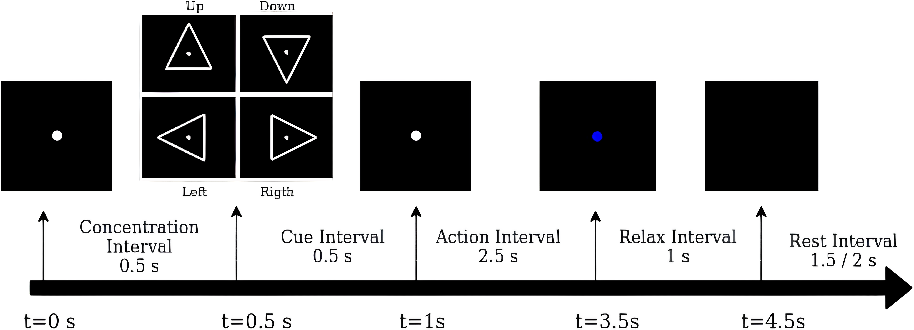
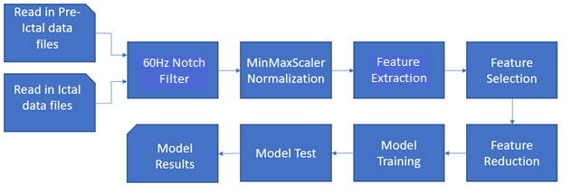
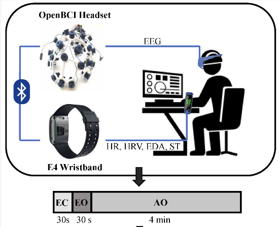
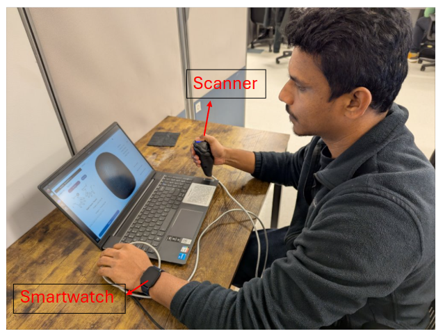
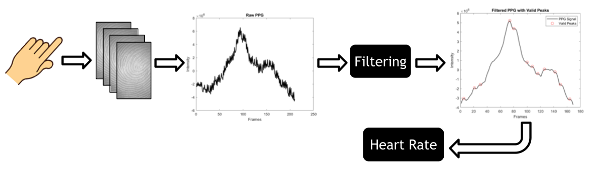
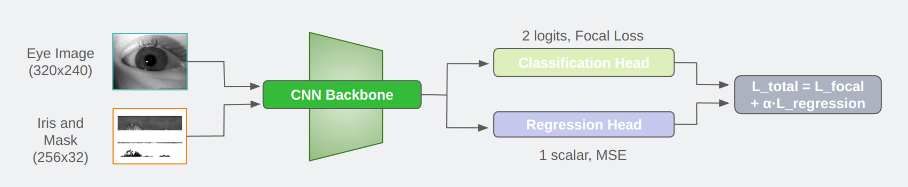
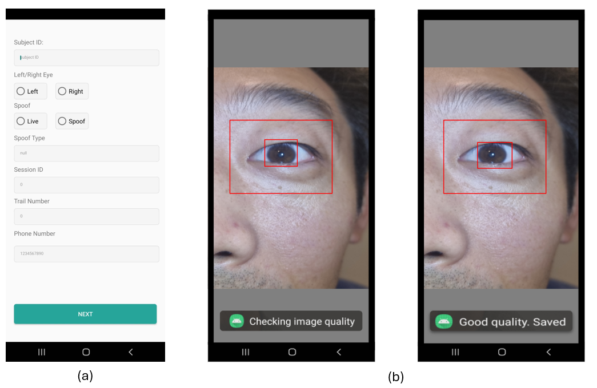
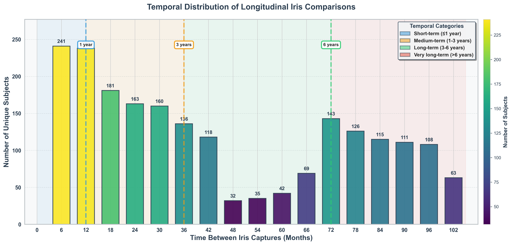

I'm a Postdoctoral Researcher at Clarkson University specializing in trustworthy and deployable AI systems. My work focuses on biometric recognition, explainable machine learning, and mobile/embedded computer vision.
My research addresses the critical gap between laboratory AI and real-world deployment by developing systems that are accurate, efficient, interpretable, and fair across demographic groups. Current focus areas include presentation attack detection for mobile authentication, LLM-driven model interpretability, and longitudinal biometric stability in pediatric populations.
My work has been adopted by leading organizations including Tools for Humanity, Neurotechnology, IDEMIA, and Mastercard Community Pass.
Production-ready Android app for research-grade biometric iris image collection with real-time quality assessment using ISO/IEC 29794-6 standards.
Transformer architecture for visible spectrum iris recognition achieving state-of-the-art performance on UBIRIS, MICHE, and CUVIRIS benchmarks.
Visible-spectrum ocular biometric dataset with 100+ subjects, designed for research in mobile iris recognition and cross-spectral matching.
Lightweight MobileNet-based segmentation networks achieving 9× inference speedup on mobile devices while maintaining 95%+ IoU/Dice accuracy.

Machine learning framework for decoding inner speech from 128-channel EEG signals to enable thought-controlled assistive devices for patients with locked-in syndrome.

Lightweight ML model for real-time seizure event classification from EEG signals, designed for mobile/embedded deployment where deep learning is too computationally expensive.

Spoof-resistant person identification using brain signals. Unlike fingerprints or iris, EEG patterns are impossible to replicate and provide inherent liveness detection.

Public multi-modal biometric dataset combining continuous fingerprint streams with synchronized PPG-derived heart rate data for authentication and liveness detection research.

Novel approach to extract heart rate and authenticate users from low-frame-rate monochrome fingerprint captures. Enables liveness detection to prevent biometric spoofing.

Comprehensive benchmark of 10 deep learning models for estimating children's age from ocular images. Deployed on Oculus Quest 2 VR headset with real-time inference.

Developed IrisQualityCapture Android app enabling ISO/IEC-compliant iris recognition on commodity smartphones. Created CUVIRIS dataset and benchmarked transformer-based matching.

Most comprehensive longitudinal pediatric iris study to date. Tracked 276 children for 9 years through adolescence, proving biometric permanence with FNMR below 0.5%.
Clarkson University, NY
Developing CNN-based presentation attack detection for government deployment. Building LLM-driven interpretability frameworks and leading multi-institution collaboration on trustworthy ML.
Clarkson University, NY
Led 9-year longitudinal biometric study with 350+ participants. Developed lightweight segmentation networks with 9× speedup. Created CUVIRIS and CFISHR datasets.
Attra (Synechron), Bengaluru, India
Built ML-based anomaly detection processing 500K+ transactions/day with 77% fraud detection accuracy. Led 5-member team with CI/CD pipelines maintaining 99.9% uptime.
2023, 2024, 2025
Clarkson University, 2024
2023, 2024
Clarkson University, 2023
I'm actively exploring opportunities in Research Science, Applied ML, and AI Engineering. Feel free to reach out for collaborations or opportunities!
📍 Potsdam, NY, USA | 📞 +1 (315) 621-0737